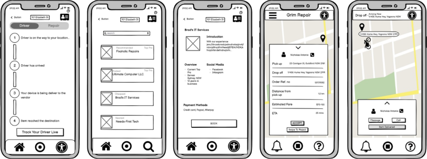
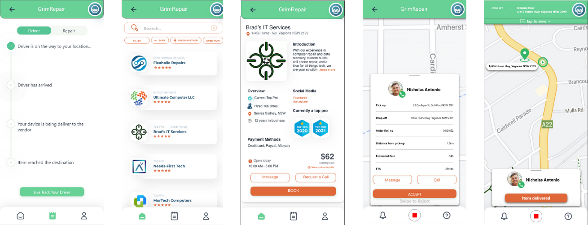

Role: User Research, Problem Research,
Prototyping & Usability Testing, Wireframes, Pitching
Timeline: 12 weeks (Aug-Nov 2021)
Tools: Balsamiq, Adobe XD, Miro, Protopie
Overview
Grim Repair is a mobile application that is designed to simplify the process of repairing electronic
devices & offer an end-to-end service including pickup, tracking & delivery.
This was created as part of a uni capstone course in a group of 5 people, with the objective
of supporting people through the use of technology to improve the quality time at home.
Background
As part of the uni course in the recent pandemic period, my team and I wanted to improve the experience
in repairing electronic devices. The goal of this project is to reduce time-consuming through on-demand
serivces.
The team was included with 5 designers, where I was responsible for the UI/UX design, research
and final presentation. Here are some of our key achievements listed below:
- Key problems were identified. We were able to effectively apply the design process to identify the problem, ideate on the solution, prototype and implement the final product.
- Executed on-time.
- Won a design award. Each person on the team was able to contribute to the solution for the prototype which resulted in a very collaborative and splendid result.
Understanding the problem
We conducted a brainstorming and interview session to uncover the pain points felt and experienced by the individuals. It was revealed that:
- Individuals were unaware of the pricing on repairing electronic devices due to lack of understanding in technology.
- Several group of individuals were inaccessible of the location repair.
- Individuals wanted to take action in speeding up the turnaround in repair processes.
- Individuals would be able to save time without the need to drop off, pickup and wait for the device.
Design Process
Within 3 months of developing an idea to constructing hi-fidelity prototype, my team created an approximated timeline with a goal of completing the app. The steps we applied in our design sprint was the Lean UX methodology, which included the phases below.

Key Features (MVP)
As a starting point, one of the members conducted competitor analysis to identify the pros and
cons of other similar apps and sites. These insights gathered has given opportunities for us to take
inspirations from particular features.
Based on the user assumptions from the Lean UX methodology, we identified the key features:
- Driver pickup/delivery. This feature removes the need for the customers to drive to the vendor's location and allow for a quicker turnaround on repairs.
- Vendor price/turnaround comparison. Customers are able to compare vendor prices and turnaround times for their particular issue.
- Real-time tracking. This feature gives the customer a live update of the item's whereabouts and repair progress.
Few low-fidelity wireframes for the MVP were created:

